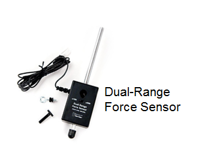
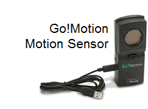

Do It! Vernier Science: Collect Digital Data
 The Challenge
The Challenge
Your challenge is to complete experiments of your choice using two different Vernier sensors and Logger Lite software. Use the standard addition and subtraction algorithms to solve problems related to your data. At the end, you will create a presentation with your findings and math problems.
How do we use sensors and other measuring tools to conduct experiments? Why do scientists collect data?
Project Steps
-
-
Digital Data Challenge #1
-
Addition Word Problem
-
Subtraction Word Problem
-
Digital Data Challenge #2
-
Addition and Subtraction Word Problem
-
Create a Presentation
-
Digital Data Challenge #1
Use Vernier sensors and Logger Lite software to collect digital data. You can choose from any of these sensors:
|
 |
 |
|
|
.png "light probe")
.png "temperature probe")
The Go!Temp and Go!Motion sensors will plug directly into your computer. If you use the Light Probe or Force Sensor, use the Go!Link attachment to connect them to your computer.
- Choose one of the sensors.
- Download the matching activity sheet:
- Follow the steps on the activity sheet.
Addition Word Problem
Using the data that you collected in your experiment, create an addition word problem. Your problem should include the following:
- A problem that is connected to your data (Example: I found the temperatures of a cup overtime. The temperatures were 32°, 56°, and 84°.
- A question. Example: what is the total of all of the temperature readings?
- The steps that you took to solve the problem using the standard addition algorithm.
Subtraction Word Problem
Using the data that you collected in your experiment, create a subtraction word problem. Your problem should include the following:
- A problem that is connected to your data (Example: I found the temperature of a cup overtime. The temperatures were 32°, 56°, and 84°.)
- A question (Example: what is the difference between the greatest and smallest temperatures?)
- The steps that you took to solve the problem using the standard addition problem in your presentation. Include your word problems and any work that you used to solve them.
Digital Data Challenge #2
Choose another sensor and follow the steps on its activity worksheet. Remember to record your answers and show your work, which you will later include in your slide presentation.
Addition and Subtraction Word Problem
Create a word problem that uses both addition and subtraction in multiple steps. What data can you use from your experiment? Think about data that has increased or decreased over time. For example, you could find the total temperature change throughout your whole experiment. Solve your problem.
Create a Presentation
Create a presentation with your answers to the activity sheet questions and experimental results. Take screenshots and photographs of your work as you go to include in your presentation. Include your word problems and any work that you used to solve them